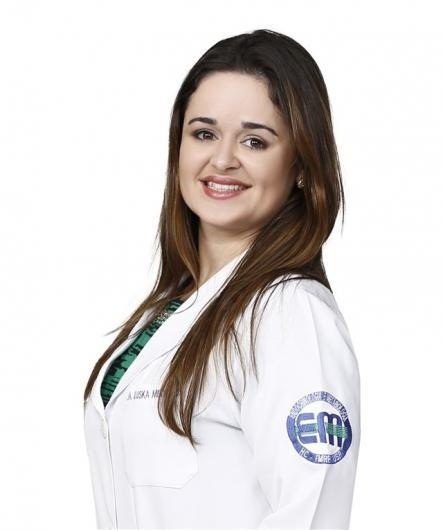

Endocrinologia PediátricaNatal · RN
Dra. Iluska Medeiros
Crescimento, puberdade, tireoide e diabetes na infância e na adolescência. Consultório no Tirol, em Natal.
Acompanhar cada fase com a família por perto, olhando a trajetória e não só uma medida.
5,0nota no Google · 63 avaliações
Áreas de cuidado
Hormônios, crescimento e cada fase da infância.
Crescimento e puberdade
Crescimento, puberdade e tireoide
Distúrbios do crescimento, deficiência do hormônio de crescimento, puberdade precoce, atraso puberal e hipotireoidismo, com atenção à trajetória de cada criança.
Conhecer a área →Diabetes
Diabetes na infância
Informação, sinais de atenção e acompanhamento.
Conhecer →Saúde metabólica
Obesidade e rotina da família
Cuidado sem culpa, considerando o contexto de cada casa.
Conhecer →Colesterol
Colesterol na infância
Histórico familiar e avaliação, mesmo quando não há sintomas.
Conhecer →Atendimento a crianças e adolescentes. A indicação de exames e de qualquer tratamento é sempre individual, definida em consulta.
Quando procurar
Mudanças que merecem uma conversa.
A altura gera dúvidas?
O crescimento é acompanhado ao longo do tempo. Uma medida isolada não define nada: a trajetória, a idade e a história da família ajudam a orientar a avaliação.
Crescimento, puberdade e tireoideA puberdade começou cedo ou está demorando?
Puberdade precoce e atraso puberal estão entre os temas de cuidado. O início e a sequência das mudanças orientam a investigação; comparar com os colegas não substitui a avaliação.
Puberdade e o tempo de cada criançaSede e xixi fora do habitual?
Sede intensa, urinar com mais frequência e perda de peso sem explicação merecem avaliação médica. Com vômitos, sonolência ou respiração diferente, procure atendimento de urgência.
Diabetes na infânciaO peso preocupa a família?
Saúde metabólica envolve crescimento, rotina e contexto familiar. A conversa começa sem culpa e sem julgamento.
Saúde metabólicaA curva do crescimento
Uma medida conta pouco.
A trajetória conta mais.
Altura e peso anotados ao longo dos anos, na caderneta e nas consultas, formam uma linha. É essa linha, comparada às curvas de referência para a idade e o sexo, que ajuda a entender o ritmo de cada criança.
“A gente tem um gráfico, plota os dados e consegue identificar se a criança tem obesidade”
Dra. Iluska Medeiros · entrevista à Tribuna do Norte, 05/05/2026 ↗
- Caderneta e medidas anteriores
- Idade e fase da puberdade
- História da família
A leitura da curva é sempre individual, feita em consulta.
Como é a consulta
Da história da família ao próximo passo.
- 01Reúna o que já tem
Caderneta, medidas anteriores de altura e peso e exames já feitos, se houver.
- 02Conte a história
Quando a família percebeu a mudança, como ela evoluiu e o que preocupa.
- 03Avaliação individual
História, exame e a trajetória do crescimento orientam os próximos passos.
A médica
Conheça a Dra. Iluska Medeiros.
Iluska Almeida Carneiro Martins de Medeiros é pediatra, com residência em Endocrinologia Pediátrica, e integra o Departamento de Pediatria da UFRN.
- Medicina · 2004–2010Universidade Federal de Campina Grande
- Residência em Pediatria · 2010–2012USP · Ribeirão Preto
- Residência em Endocrinologia Pediátrica · 2012–2013USP · Ribeirão Preto
- DocênciaDepartamento de Pediatria · UFRN
Nas palavras da médica
“Muitas pessoas tratam a obesidade como escolha e não como doença. E é uma doença”
Dra. Iluska Medeiros · entrevista ao Agora RN, 20/04/2026 ↗
Na imprensa e na pesquisa
Informação para as famílias.
Tema: obesidade como condição de saúde
Ambiente da casa, participação da família e cuidado sem julgamento.
Ler a entrevista ↗Agora RN · 14/03/2026Tema: diabetes na infância e sinais de alerta
Sinais de alerta, diferenças entre os tipos e acesso à avaliação.
Ler a entrevista ↗Tribuna do Norte · 23/08/2025Tema: colesterol na infância
Histórico familiar, hábitos e alterações que podem não dar sintomas.
Ler a entrevista ↗Tribuna do Norte · 05/05/2026Tema: crescimento e curvas por idade
Curvas por idade e a trajetória da criança ao longo do tempo.
Ler a entrevista ↗Tribuna do Norte · 07/08/2022Tema: crescimento, peso e contexto familiar
Acompanhamento regular e condições de vida da família.
Ler a entrevista ↗Pesquisa · 2026Dois trabalhos publicados em 2026
Epigenética e diabetes tipo 1 (Current Diabetes Reviews) e atividade física e obesidade na infância (Pediatric Exercise Science).
Ver no ORCID ↗Onde atendo
Consultório no Tirol, em Natal.
Onde atendo
Consultório no Tirol
Av. Afonso Pena, 952 · TirolNatal/RN
Na Clínica Mimar Afonso Pena.
Atendimento particular. Dia e hora são confirmados pela recepção.
Perguntas frequentes
Antes de marcar
Escolher dia e hora confirma a consulta?
Não. A escolha prepara uma mensagem de preferência. A recepção confirma manualmente o dia e a hora.
O atendimento é particular?
Sim. Converse com a recepção sobre as condições do atendimento e a confirmação da consulta.
Preciso fazer exames antes da consulta?
Não faça novos exames por conta própria. Se já tiver caderneta, medidas anteriores ou exames, leve-os para a consulta.
Este contato atende urgências?
Não. Em situação aguda ou piora importante do estado geral, procure um serviço de urgência.
Fale com a recepção
Qual dia e hora funcionam para você?
Escolha uma preferência e prepare a mensagem. A recepção confere a disponibilidade e confirma o agendamento.
Consulta
Cada fase tem o seu tempo.
Av. Afonso Pena, 952 · Tirol · Natal